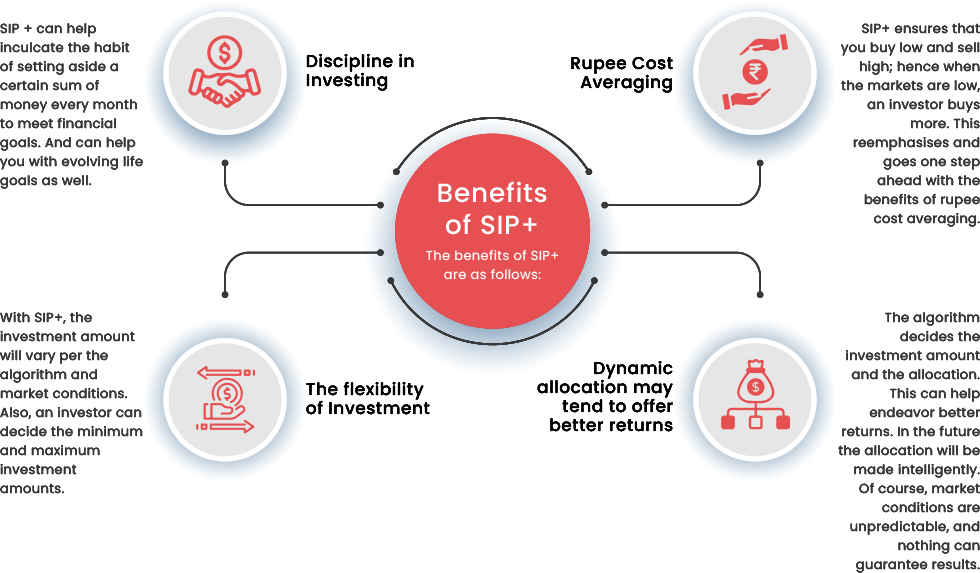

elit,m ad minim veniam, quis nostrud exercitation ullamco laboris nisi ut aliquip ex ea commodo consequat.
Welcome to the world of smart investing choices! You have made a wise decision to explore the world of SIP+. As you progress in your financial management journey, your investments may serve you better if they are calculated more scientifically. After all, there are goals to be met and dreams to be lived! Typically, ‘smart’ is when a product or service performs something more complex, something more than the basic outcome expected. Introducing Nippon India sip+, which does not simply invest periodically but it invests intelligently as well.
What is SIP+
SIP+ is a feature offered by Nippon India Mutual Fund which attempts to invest dynamically aided by an in house proprietary quantitative model. This in house model depending on multiple market indicators seeks to gauge if the prevailing equity market levels are cheap or expensive and accordingly invest more or less. In the SIP+ feature an investor will decide the base amount, and the investment will vary between 0.3X to 3X of the base amount. So, say, an investor decides to invest Rs. 5000 per month, then SIP+ will invest between Rs.1500 to Rs.15000, depending on the market conditions. (The given example is only for explanation purpose)
How does SIP+ work
To understand how a SIP+ works, we need to first look at the Nippon India Mutual Fund’s Quant-based Proprietary Model, which determines an investor's monthly instalments and allocates it dynamically. The NIMF’s Quant-based Proprietary Model uses intuitive methods along with an algorithm that evaluates Valuation and Contra indicators to allocate the SIPs dynamically based on the current market conditions.
The model will derive a multiplier/ value based on these parameters and indicators. Using this multiplier, the current market conditions are analyzed; if the multiplier determines the markets to be bearish, it may be time to buy, and hence the investment amount may increase; if the markets are determined to be bullish, then it's time to hold the buying and hence the investment may reduce. This is how SIP+ works, intending to give the investors better returns.

How to Start SIP+ Investment?
It is fairly simple to start investing through SIP+ in Nippon India Mutual Fund. The below-mentioned steps must be followed:
the plan, the payout option, and the mode of investing
lumpsum/ SIP/ lumpsum+SIP/ SIP+
On selecting SIP+ you will be asked the minimum and maximum amount
Complete the KYC details and bank details and process the transaction
Which Schemes are available for SIP+?
Currently only the below mentioned schemes are available for investing through the SIP+ option:
Nippon India
Index Fund
Nifty 50 Plan
Nippon India Index Fund
S&P BSE Sensex Plan
Nippon India Nifty Smallcap
250 Index Fund
Nippon India Nifty Midcap
150 Index Fund
Conclusion
As an investor who has a surplus income and is keen on benefiting from timing the market but does not have the time or expertise for it can benefit from the SIP+ option.
FAQs
elit,m ad minim veniam, quis nostrud exercitation ullamco laboris nisi ut aliquip ex ea commodo consequat.
elit,m ad minim veniam, quis nostrud exercitation ullamco laboris nisi ut aliquip ex ea commodo consequat.
elit,m ad minim veniam, quis nostrud exercitation ullamco laboris nisi ut aliquip ex ea commodo consequat.
elit,m ad minim veniam, quis nostrud exercitation ullamco laboris nisi ut aliquip ex ea commodo consequat.
elit,m ad minim veniam, quis nostrud exercitation ullamco laboris nisi ut aliquip ex ea commodo consequat.
elit,m ad minim veniam, quis nostrud exercitation ullamco laboris nisi ut aliquip ex ea commodo consequat.
elit,m ad minim veniam, quis nostrud exercitation ullamco laboris nisi ut aliquip ex ea commodo consequat.
elit,m ad minim veniam, quis nostrud exercitation ullamco laboris nisi ut aliquip ex ea commodo consequat.
Terms and Conditions of SIP+
Important Links
Get The App